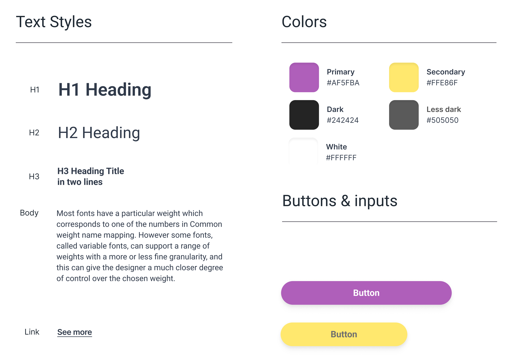

About project
If you have kids, you have a lot of work to do. Many duties are related to children's education - you have to remember about payments, trips, events, be in touch with the staff to know if your child is developing well, not to forget to bring crayons for Thursday ... Busy, sometimes we forget something . Sometimes we are in a hurry and although we would like to ask the teacher about the child's progress, we only pick them up quickly from kindergarten, without having time to talk.
What if all these things could be done practically at any time, using an application on the phone? Pay the bills, send a message to the teacher, check when the pool classes are, and what art materials need to be delivered by the end of the week? If, in addition, it was possible to view photos and reports from trips, check information about the child, and the application itself would remind us of upcoming payments and important events? Life would be easier and it would be easier for parents to meet all their responsibilities. This is exactly how the application designed in this case study is supposed to work.
Tools
Figma
Miro

Optimal Workshop
Design system
Desk research and competition research
I chose three applications of this type with a fairly large number of downloads - 4parents with 50,000, LiveKid with 100,000 and Inso with 10,000. It gave me an overview of what the users' needs and pain points are, what existing and similar tools contain, what features can be added and what can be improved.
User research
What we want to know?
- How does the in the institution look like from the point of view of the parent / guardian?
- What information does a parent / guardian need?
- What is he/she satisfied with in the institution?
- What does he/she have problems with on a daily basis, what complicates his life?
- What would make it easier for him/her?
- What is his/her experience in using the application, is he/she used to it, is it convenient for him/her or does he/she prefer traditional forms of dealing with matters?
Methods
In-depth interviews
Surveys
In-depth interviews
First, I personally interviewed 5 users who have pre-school children. I asked about the needs, frustrations and habits of five of them.
Main questions
- Would you like a different form of communication with staff / parents? What? Why?
- What information about the child do you get from the facility? What information are you missing?
- How do you pay, is it convenient? Is it clear to you how much and for what you are paying?
- Do you use mobile applications often? (mail, photos, ordering food, shopping, instant messaging, work / hobby / entertainment tools). Is it simple or straightforward for you?

Research analysis
General conclusions
Users have little time for all chores and spend their free time with their family. They have 1-2 children aged 2 to 6 years. Using web applications is natural for them and they find it easy
Problems to be solved
- The babysitter is unable to remember what and how much each child ate
- The parent cannot react when the child does not eat or eats too little, because he does not receive such information
- No information about the staff schedule
- The parent does not always have complete information on what they are paying for
- No individual information about the kid
What functions should the Kindergarten / Nursery Management Tool have?
- Track your child's progress
- Reporting absences / lateness
- Calendar
- Communication with parents
- Facility contact details
- Gallery
- Teachers schedule
- Messenger / forum
- News
- Attendance register
- Diary
Surveys
After conducting interviews and analyzing the collected information, I verified the data using a surveys. I conducted them on 15 users with small children attending the facility. I tried to recognize whether the conclusions were applicable in a broader perspective.
Main questions
- What payment options would you like available?
- Would you like to be able to use other forms of communication with the institution?
- Is the information you get from the childcare facility sufficient?
- How do you prefer to get things done, online or in person?
- How often do you use mobile applications?
Survey data analysis
Minimum Viable Product
Based on the collected information, I developed an MVP with the most necessary functions that should be included in the application. The implementation is planned for two sprints, first the necessary functions will be implemented and the easiest to implement.
Personas
In order to empathize with the user even deeper, on the basis of research data, I created personas that could use the designed application.
Information architecture
Using a previously developed MVP, respondent votes, and a card sorting study, I developed information architecture diagram. I had a dilemma where to assign the meal option, so I did another study and assigned meals according to it.
Sketches